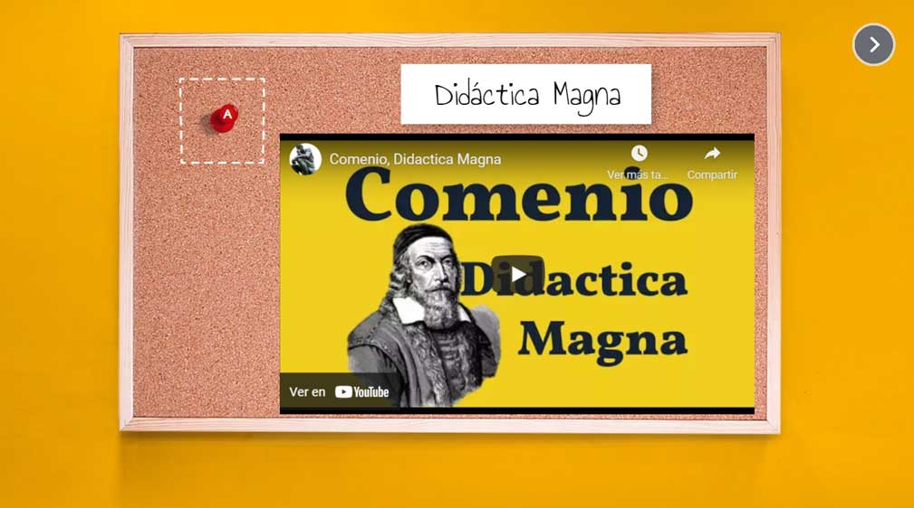
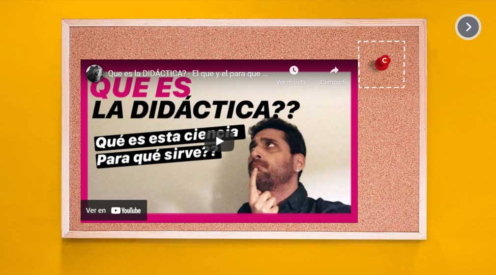
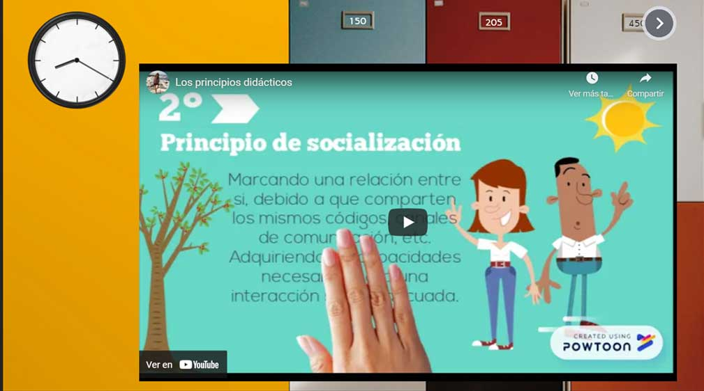
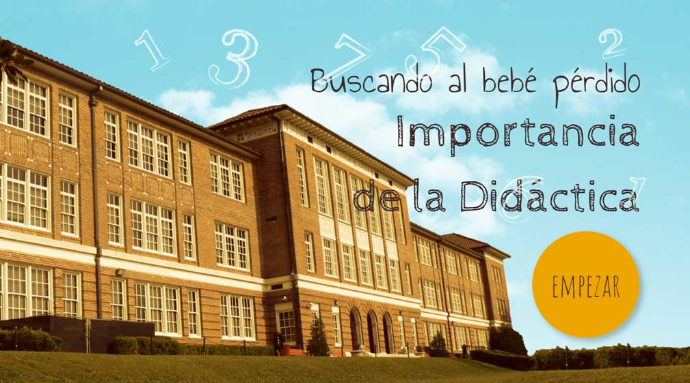

Para conocer toda la información, haga clic en la flecha de la derecha.

Introducción
En esta segunda fase nos enfocaremos en crear materiales de aprendizaje organizados en una ruta que implique tanto un reto como un incentivo para el alumno.
Propósito
Generar materiales interactivos que sirvan para guiar al alumnado de forma atractiva a través de sus procesos de aprendizaje.

2.1 Gamificación y aprendizaje
La gamificación (también conocida como ludificación) es el uso de técnicas, elementos y dinámicas propias de los juegos y el ocio en actividades recreativas con el fin de potenciar la motivación, así como de reforzar la conducta para solucionar un problema, mejorar la productividad, obtener un objetivo, activar el aprendizaje y evaluar a individuos concretos.
Esta tendencia pretende aplicar el pensamiento y la mecánica de los juegos en ámbitos específicos de la vida cotidiana, en los que se propone facilitar la consecución de ciertos objetivos relacionados con la formación, fidelización, cohesión social, creatividad, etcétera.
Por ejemplo, la inclusión de juegos en una red social incrementa, de forma considerable, la motivación y la participación de sus usuarios.
Los juegos han demostrado tener un gran poder motivador. Esto se debe a la capacidad de los elementos constituyentes de los juegos (puntos, medallas, tablas clasificatorias, marcos narrativos de la actividad, trabajo en grupos), para atender las necesidades básicas que impulsan la acción del ser humano: competencia, autonomía y pertenencia al grupo. En este sentido, los juegos son capaces de potenciar los resultados en el aprendizaje por varias razones:
Para consultar la información de cada subtema, seleccione la pestaña correspondiente:
2.1.1 Definición
El diccionario Oxford define la palabra gamification como «la aplicación de elementos típicos del juego (por ejemplo, calificación por puntos, competición con los demás, reglas de juego) a otras áreas de actividad».
Con la intención de conocer más a detalle sobre la gamificación y sus características, revise la siguiente infografía.
2.1.2 Aplicación educativa
El enfoque lúdico de algunas propuestas de trabajo se ha efectuado, desde hace tiempo, como una forma de adaptación curricular. Sin embargo, la gamificación supone algo más, en la actualidad el análisis detallado de los factores que condicionan el éxito de los videojuegos aporta múltiples sugerencias de cómo plantear tareas con las TIC´s. A menudo, como docentes, conocemos a alumnos que invierten, por iniciativa propia, tiempo y esfuerzo en avanzar por escenarios virtuales, recolectando puntos, niveles, medallas, etc. ¿Y si fuera factible encauzar todo ese potencial hacia la adquisición de contenidos más académicos? ¿Esto se puede conseguir? ¿Es algo que resulta interesante y deseable?
El éxito de los videojuegos se basa en ciertos parámetros que determinan su auge. Dejando a un lado la estética audiovisual, se propone centrar el análisis en los aspectos cognitivos que despiertan en los usuarios porque resultan más determinantes.
A continuación, haga clic en cada ventana para leer la información completa.
2.1.3 Gamificación y TIC’s
Lógicamente, es posible gamificar sin utilizar videojuegos ni TIC. No se trata de un fenómeno novedoso. Basta recordar juegos clásicos, como "la lotería", para incentivar la observación y la escucha atenta en clase, o bien, "la cuchara", que simula ser un avión aterrizando en la boca del niño para comer su papilla. Sin embargo, el análisis de las claves del éxito de los videojuegos y el uso de las nuevas tecnologías incorpora herramientas, factores y matices más potentes, ricos y variados al proceso. |
>El uso de los llamados "juegos serios", es decir, los videojuegos con propósito pedagógico, no agotan el espacio de la gamificación educativa. A la luz de los factores expuestos que justifican su éxito se podrían deducir algunas pautas a tener en cuenta a la hora de diseñar propuestas de trabajo con las TIC’s para el alumnado. Se trataría de dotar a las tareas de ciertas dosis de jugabilidad. Para ello habría que integrar ingredientes como la imaginación, simulación, ficción, avatares fantásticos, niveles, insignias, puntuaciones, toma de decisiones, flexibilidad, resolución de problemas, exploración, ensayo y error, retroalimentación adecuada, graduación de la dificultad, seguridad, jergas, enfoque social, etc. La mayoría de las tareas escolares admiten algunas de estas adaptaciones por medio de las TIC’s y a ese proceso se le denomina gamificación educativa. Existen múltiples sitios web que usan la gamificación como estrategia educativa para mejorar la calidad del aprendizaje. |
2.1.4 Ventajas e inconvenientes
No cabe duda de que los videojuegos y sus aplicaciones no son la panacea en el entorno educativo. Existe una clara controversia entre quienes defienden los principios de la gamificación en educación y sus detractores.
A continuación, haga clic en la ventana correspondiente para leer la información.
Ventajas
Inconvenientes
Inconvenientes
Elevado coste. Conseguir videojuegos de calidad en un programa educativo resulta muy costoso. Tanto editoriales como instituciones no se encuentran en situación de afrontarlo, y menos en los tiempos actuales. Los multimedia elaborados hasta la fecha son creados con un presupuesto muy modesto que se alejan de forma considerable de los videojuegos comerciales, no se ajustan a los principios de calidad de la gamificación, no funcionan adecuadamente o son mini juegos muy limitados en cuanto a su alcance.
Distracción y pérdida de tiempo. Desde el punto de vista educativo, los juegos no ayudan a desarrollar grandes habilidades (por ejemplo, aquellas relacionadas con la expresión oral). Por otra parte, cuando fomentan otras lo hacen de forma difusa y con una elevada pérdida de tiempo.
Los alumnos son competitivos y desean ganar al sistema de cualquier forma, dando lugar, en muchas ocasiones, a escasos o no deseados resultados de aprendizaje.
Equilibrio entre lo lúdico y lo formativo. Es muy difícil encontrar el término medio que permita disponer de un juego atractivo por medio del que se realice un aprendizaje efectivo desde el ámbito educativo.
Motivación efímera. Las ganas de obtener premios y recompensas no perduran en el tiempo y terminan aburriendo una vez superada la novedad inicial.
Ventajas
Motivación. Aunque no sea fácil conseguir el nivel de motivación que suscitan los videojuegos, la ludificación puede incrementar el atractivo de ciertas tareas académicas mejorando la calidad de enseñanza y aprendizaje.
Alfabetización tecnológica. El uso de videojuegos y tareas gamificadas con las TIC’s favorece que el niño/a desarrolle habilidades en el manejo del ordenador, el software y las redes. Esta formación tendrá transferencia positiva hacia otras tareas más académicas.
Mentalidad multitarea. Es posible mejorar la capacidad de captar distintos detalles de una o varias pantallas, lo cual supone una evolución en la lectura en pantallas y en el acceso general a la información digital.
Trabajo en equipo. Los juegos actuales basados en las redes sociales facilitan la comunicación e intercambio con los demás. Las tareas TIC´s que utilizan recursos web 2.0 también pueden desarrollar este enfoque.
Instrucción individualizada. Cada alumno/a puede jugar y aprender por sí mismo siguiendo su propio ritmo.
2.1.5 Mecánicas del juego
Las mecánicas son recursos que se utilizan en los juegos para generar disfrute, adhesión, fidelización o compromiso en el usuario. Básicamente plantean un reto y una forma de conseguirlo. A continuación, se analizan las mecánicas del juego más habituales que se pueden aplicar para gamificar una actividad con TIC's.
A continuación, haga clic en cada ventana para leer la información completa.
Antes de iniciar un proceso de gamificación, es necesario identificar los procesos o actividades que se desean incentivar. Por ejemplo: disminuir el absentismo escolar, mejorar la atención en clase, etc. A continuación, se diseña la actividad seleccionando y aplicando las mecánicas de juego (niveles, insignias o mochilas, clasificaciones, etc.) más adecuadas para conseguir esos objetivos. Entre las principales mecánicas de juego utilizadas en gamificación se pueden destacar las siguientes:
Para consultar la información, haga clic sobre el nombre de cada mecánica.
2.1.6 Sugerencias para la gamificación educativa
En la idea de dotar de atractivo a ciertas tareas, se proponen ejemplos de cómo integrar los principios de gamificación en algunas de ellas. Se pueden aplicar directamente a actividades puntuales, o bien al conjunto de actividades que integran una unidad didáctica o un curso en línea.
A partir de la identificación previa de los procesos que deseamos incentivar, el siguiente paso es el diseño de tareas aplicando las mecánicas del juego más adecuadas (mochilas, rankings, niveles, roles, avatares, retroalimentación, etc.) con intención de incrementar la motivación de nuestro alumnado.
2.2 Creación de materiales interactivos con Genially
Genially es una multipremiada plataforma de creación de contenidos interactivos en línea. Es una plataforma muy difundida y aceptada por su facilidad de uso y su versatilidad, permitiéndonos crear presentaciones, infografías, gamificaciones, imágenes interactivas y otros contenidos interactivos y muy atractivos.
Tiene un modelo de trabajo freemium, por lo que cualquier persona puede utilizar una versión gratuita (pero limitada) de la herramienta por tiempo ilimitado, o bien adquirir uno de los planes premium para usar todas las características avanzadas.
La herramienta dispone de un editor en línea con el que se puede crear contenidos desde cualquier dispositivo sin la necesidad de descargar ni instalar nada. Ofrece una serie de plantillas gratuitas que además de atractivas, son muy funcionales.
Empecemos nuestra aventura dándonos de alta en el programa (link: https://genial.ly/es)
Ahora, revise el siguiente tutorial, en el que podrá consultar cómo registrarse en Genially y, posteriormente, realice el paso a paso.
Video Cómo registrarse en Genially.
Ahora, para conocer la información de cada subtema haga clic en la pestaña correspondiente:
2.2.1 Curso de iniciación
Ahora que ha logrado entrar a la plataforma de Genially, podrá realizar su primer curso en la academia. Al terminar este reto obtendrá un certificado que deberá de mostrar en el foro colaborativo de esta fase de trabajo.
Revise el siguiente tutorial y realice el paso a paso.
Video Cómo hacer el primer curso en Genially.
2.2.2 Insertar contenido externo
Con ayuda del tutorial anterior, repita los pasos uno al tres, pero ahora en lugar de buscar la palabra iniciación, buscará la frase embeber contenido, entre al curso y obtenga su certificado.
Recuerde guardar este certificado, pues le será requerido más adelante.

2.2.3 Creación de cuestionarios interactivos con Genially
|
Los cuestionarios (o quizzes, en inglés) son herramientas de gran valor para asegurarnos de que el alumnado centre su atención en los aspectos clave del curso. Es recomendable aplicar un cuestionario de autoevaluación cada vez que terminamos un tema o una unidad de aprendizaje, de esta manera los estudiantes pueden repasar los conocimientos clave, recibir retroalimentación, información adicional o canalización a los materiales que se le dificultan. La creación de estos materiales es un tanto laboriosa, pero nos asegura que nuestros alumnos recibirán la retroalimentación necesaria en el momento adecuado, reduciendo significativamente las lagunas de aprendizaje. |
Otra de sus utilidades es que se puede profundizar aún más en el conocimiento de ciertos temas de forma libre y autónoma, quedando a criterio del profesor si crea evaluaciones optativas de mayor dificultad con premios adicionales, como exámenes finales menos complejos o gratificaciones y premios adicionales por el esfuerzo extra de haber superado niveles de dificultad más altos. Le recomiendo que vea el video tutorial de Roxana Falasco (https://youtu.be/8iItuwt-Sog) para visualizar cómo se va construyendo un cuestionario en Genially. Cabe mencionar que, para realizar un cuestionario con retroalimentaciones para cada pregunta, es necesario tener un plan de cómo se va a estructurar la interacción a lo largo del mismo, para no perderse al momento de estarlo construyendo. |
Revise el siguiente recurso didáctico que sirve como un ejemplo de cómo hacer la planeación previa:
2.3 Creación de cuartos de escape o de búsquedas del tesoro
Para leer la información completa, haga clic en la flecha correspondiente.
Esta forma de trabajar hará que los estudiantes estén motivados, siendo una garantía de éxito para su aula, pues como afirma el doctor en Neurociencia, Francisco Mora: “El cerebro sólo aprende si hay emoción”. Los alumnos se involucrarán tanto que no se darán cuenta de todo lo que están aprendiendo.
Para revisar algunas características sobre esta forma de trabajo, haga clic en cada una de las siguientes ventanas.
Seleccione la pestaña que corresponda para consultar la información de los siguientes subtemas:
2.3.1 Objetivo general de la lección
Antes de empezar a construir nuestra aventura, es importante plantearse cuál es el objetivo de aprendizaje que estamos buscando (adquisición de nuevos conocimientos, repaso de temas pasados, ejercicios de refuerzo). Veamos cómo se podrían abordar los retos desde cada temática:
Como podrá darse cuenta, dependiendo del momento de la sesión didáctica (antes, durante o después), se debe de estructurar la actividad para que sea pertinente a las necesidades del alumnado. Por ejemplo, sería muy desafortunado estructurar sus materiales nuevos a modo de repaso, pues estaríamos asumiendo que los contenidos ya fueron adquiridos y medianamente dominados por el alumnado. Lo que sólo ocasionará confusión y frustración entre los estudiantes.
2.3.2 Temática e historia del juego
|
Elegir una temática adecuada es de suma importancia para enganchar al alumno en la actividad, entre más conozca a su grupo, le será más fácil proponer temáticas que les sean interesantes y/o divertidas. Tenga en cuenta que una vez que elige una temática, debe llevar un hilo conductor a lo largo de la actividad para mantener interesados y cautivados a los estudiantes con la historia que está contando. |
Por ejemplo, si elige una temática de zombis vivientes deberá mantener el suspenso a lo largo de los niveles del juego, para ello puede incluir algunos zombis escondidos que salten de improviso, con la opción de que nos atrapen cuando nos equivocamos o que podamos escapar cuando acertamos. Si la temática es una aventura en el campo, una sala de cirugías, un rescate en las montañas o una aventura en el espacio, deberá ambientar las escenas y situaciones de acuerdo con el hilo de su historia. |
Ahora, veamos un ejemplo del ejercicio que propongo como tema de estudio de esta fase.
Video: Línea temática en Genially
2.3.3 Niveles del juego/Objetivos de Aprendizaje
|
Antes de comenzar a crear, es necesario definir cuáles serán los objetivos de aprendizaje a obtener con el material que vamos a trabajar. Pregúntese ¿qué aspectos busco cubrir con la lección? Quizá desee hacer una introducción acerca del tema, narrar un poco de la historia y dar un vistazo general acerca del tema, como se vio en el ejemplo de la lección “La importancia de la didáctica”. Tal vez requiera establecer una comparación entre diferentes posturas de pensamiento o quiera precisar los pasos de un procedimiento o hacer un estudio de caso para evaluar conocimiento y/o comportamientos. |
Sólo tenga en cuenta que necesitará tanto niveles como objetivos de aprendizaje esté buscando lograr para no caer en el error de incluir demasiada información en un mismo nivel. Una cantidad óptima de información se puede revisar bien en no más de 10 minutos, si lo que planea revisar abarca más de ese tiempo, quizá debería separarlo en dos o más objetivos de aprendizaje de fácil manejo para sus alumnos. |
Veamos el tiempo de duración de los materiales expuestos en el ejercicio de ejemplo:
  Los tres materiales suman 12 minutos (4 minutos de duración en promedio). Al ser relativamente cortos, al alumno no se le complica revisarlos y le resulta muy fácil mantener la concentración por ese corto período de tiempo. Así mismo, en caso de no entenderlos en la primera revisión, puede volverlos a visualizar, pues la inversión de tiempo y esfuerzo es relativamente manejable.
2.3.4 Retos a superar y pistas sugeridas
Después de cada video hay un cuestionario de repaso con unas pocas preguntas de control centradas en los temas sustantivos de la videoexposición. Cabe mencionar que estos cuestionarios se construyen por separado y posteriormente se incluyen en el juego principal, cuidando que mantengan la línea argumentativa al brindar las pistas que nos permitirán avanzar en el reto.
Revise el video en el que se explica la preparación e inserción de los cuestionarios:
Video: Insertando un Genially dentro de otro.
Como pudo constatar, en la parte final del cuestionario se debe dar una pista acerca de lo que debemos hacer en la aventura de búsqueda del tesoro, que en este caso es la búsqueda de un bebé jirafa. Se nos dice que debemos ir por la puerta de la derecha, lo cual nos obliga a crear la ambientación del siguiente cuarto para que el alumnado pueda aplicar la pista que le acabamos de dar; eso lo veremos en el siguiente subtema.
2.3.5 Puertas con código de acceso
|
Cada vez que nuestros alumnos terminan un reto, los debemos regresar a la historia que dio pie a la búsqueda del tesoro, pues de esta forma los mantenemos cautivados con la trama. Para mantener su interés debemos regresar a un cuarto/acertijo que sólo se pueda resolver con la pista que arrojó el cuestionario que solucionaron en el cuarto anterior. |
Hay dos formas básicas de crear estos cuartos/acertijos, la primera y más fácil es poner imágenes a modo de opciones a elegir y configurar la correcta para que los deje avanzar, mientras las demás imágenes los mandan de regreso al material de estudio. La segunda forma es un poco más elaborada y consta de incluir una sola imagen con varios elementos desde donde el alumno deberá elegir el elemento correcto. Para convertir una imagen en un recurso sensible sólo debemos usar máscaras invisibles de interacción que respondan como lo tenemos planeado. |
Pero esto es más fácil de entender viéndolo. ¡Vamos allá!
Video: Puertas de acceso en Genially.
2.3.6 Mapa de navegación
Al menos en las primeras ocasiones que organicemos búsquedas del tesoro o cuartos de escape, es importante tener una idea gráfica del proceso para no omitir algún paso y tener claro a dónde vamos a dirigir a nuestros usuarios en cada uno de los puntos de interacción. Además, nos servirá para contabilizar el número de cuartos y el contenido de los mismos al momento de revisar su funcionamiento.
Veamos cómo queda el mapa de navegación de la búsqueda del tesoro que estamos usando de ejemplo:
|  |
Como se puede constatar visualmente, debemos tener habilitados siete cuartos principales (están representados en la línea de cuadros azules en la parte superior) y además habrá que crear cuatro cuartos que faciliten la navegación en cada una de las tres misiones, es decir, 12 cuartos adicionales para hacer funcional el reto. Lo que nos arroja un total de 19 cuartos a configurar para crear una sensación de inmersión en la historia. Tener este esquema también nos permite identificar que necesitamos tres materiales de estudio a localizar y compartir, así como tres cuestionarios a crear de acuerdo con los contenidos expuestos y que deben conceder al final alguna pista para resolver el acertijo del siguiente cuarto. |
Ahora, comparto el link del producto final de este material por si lo quiere probar usted mismo.
2.3.7 Premio final
Ahora, para acceder a la información haga clic en el icono correspondiente.
Evidencias de desempeño
Fuentes de Información
Roxana Falasco (2018, agosto 21). Crear test interactivo con Genially. [Video]. YouTube. https://youtu.be/8iItuwt-Sog
Gómez, J. L. (2020). Gamificación en contextos educativos: Análisis de aplicación en un programa de contaduría pública a distancia. Revista Universidad y Empresa, 22(38), 8. https://doi.org/10.12804/revistas.urosario.edu.co/empresa/a.6939
Londoño, L. M., & Rojas López, M. D. (2020). De los juegos a la gamificación: propuesta de un modelo integrado. Educación y Educadores, 23(3), 493-512. https://doi.org/10.5294/edu.2020.23.3.7
Ortiz-Colón, A. M., Jordán, J., & Agredal, M. (2018). Gamificación en educación: Una panorámica sobre el estado de la cuestión. Educação e Pesquisa, 44(0). https://doi.org/10.1590/s1678-4634201844173773
Parra-González, M. E., Segura-Robles, A., Cano, E. V., & López-Meneses, E. (2020). Gamificación para fomentar la activación del alumnado en su aprendizage. Texto Livre: Linguagem e Tecnologia, 13(3), 278-293. https://doi.org/10.35699/1983-3652.2020.25846
Reyes Cabrera, W. R., & Quiñonez Pech, S. H. (2020). Gamification in distance education: Experiences in a university educational model. Apertura, 12(2), 6-19. https://doi.org/10.32870/ap.v12n2.1849
Torres-Barreto, M. L., Álvarez-Melgarejo, M., & Plata-Gómez, K. R. (2021). Competencias transversales en Ingenierías. Panorama, 15(28), 124-142. https://doi.org/10.15765/pnrm.v15i28.1820
Zepeda Hernández, S., Abascal Mena, R., & López Ornelas, E. (2016). Integración de gamificación y aprendizaje activo en el aula. Ra Ximhai, 315–326. https://doi.org/10.35197/rx.12.01.e3.2016.21.sz